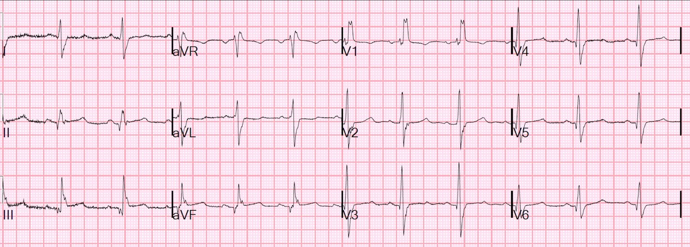
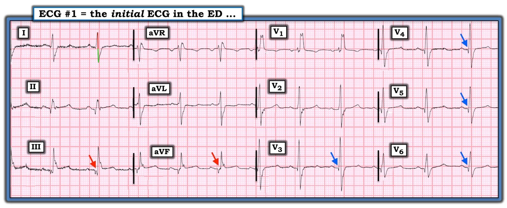

31/01/2020 — Tiền sử nhồi máu cơ tim và đặt stent, cơn đau thắt ngực ngắn, đến cấp cứu với điện tâm đồ này. Và phân suất dự trữ lưu lượng vành (FFR) là gì?
Bản dịch tiếng Việt của bài "H/o MI and stents with brief angina has this ED ECG. And what is Fractional Flow Reserve?" – Dr. Smith’s ECG Blog. Giữ nguyên toàn bộ 3 hình ảnh của bản gốc.
Một người đàn ông trung niên than phiền cơn đau thắt ngực điển hình kéo dài 15 phút, đã hết khi đến khoa cấp cứu (ED).
Đây là điện tâm đồ ban đầu của bệnh nhân:


Nhịp xoang kèm RBBB và có thể có LPFB (xem phân tích chi tiết của Dr. Grauer bên dưới). Có ST chênh lên ở II, III và aVF, và ST chênh xuống soi gương (reciprocal) ở aVL. Và có sóng Q ở cả các chuyển đạo dưới lẫn các chuyển đạo bên. Vì vậy, điện tâm đồ này quả thực có giá trị chẩn đoán nhồi máu cơ tim.
Có nên kích hoạt phòng thông tim (cath lab) không?
Không! Ít nhất là chưa kích hoạt ngay, vì điện tâm đồ này KHÔNG có giá trị chẩn đoán nhồi máu cơ tim CẤP (do tắc) (OMI cấp). Chúng ta cần thăm dò thêm.
Dù có giá trị chẩn đoán nhồi máu cơ tim, hình ảnh này rất gợi ý “nhồi máu cơ tim thành dưới cũ với ST chênh lên tồn tại dai dẳng” hay “hình thái phình thành dưới (inferior aneurysm morphology)”, vì có các sóng Q hình thành rõ và sóng T dẹt.
Phình thành dưới có thể trông rất giống nhồi máu cơ tim thành dưới CẤP, vì nó thường không có sóng QS (như phình thất trái thành trước thường có); thay vào đó, phình thành dưới thường có sóng QR, mà trong nhồi máu cơ tim thành dưới thì sóng QR thường gặp ở CẢ nhồi máu cấp lẫn nhồi máu cũ. Sóng QS hàm ý không còn lực khử cực nào hướng về phía chuyển đạo nằm bên trên. Xin nhắc lại: ngược lại, phình thành trước dễ phân biệt với nhồi máu cơ tim cấp hơn nhiều nhờ có sóng QS.
Tôi lập tức tìm hồ sơ cũ, vốn chỉ có ở một bệnh viện khác, và một siêu âm tim cũ xác nhận thành dưới “vô động” (akinesis) (tình trạng này cũng có thể kèm ST chênh lên dai dẳng). Một túi phình giải phẫu thực sự có “loạn động” (dyskinesis) (thành thất phồng ra ngoài trong thì tâm thu) hoặc “biến dạng tâm trương” (diastolic distortion) (thành thất phồng ra ngoài trong thì tâm trương).
Xem bất kỳ bài nào trong số này để biết thêm về phình thất trái thành trước.
Đây là các ca khác về phình thất trái thành dưới.
Làm thế nào mà tôi nghi ngờ mạnh mẽ rằng đây KHÔNG phải là tổn thương cấp?
1. Cơn đau ngực của bệnh nhân đã hết vào thời điểm ghi điện tâm đồ
2. Có các sóng Q hình thành rõ
3. Sóng T dẹt. Sóng T trong giai đoạn cấp thì lớn, dù không nhất thiết là tối cấp.
Mặc dù điện tâm đồ này không đòi hỏi kích hoạt phòng thông tim ngay lập tức, nó vẫn rất đáng lo ngại. Nó có thể là cấp, dù nhiều khả năng là không. Nhưng nó chứng minh rằng bệnh nhân có bệnh mạch vành và làm cho xác suất cơn đau ngực của bệnh nhân là do hội chứng vành cấp (ACS) trở nên rất, rất cao.
Quả thực, troponin I lần đầu của bệnh nhân là 0,128 ng/mL, với giá trị sau đó giảm dần, có giá trị chẩn đoán nhồi máu cơ tim.
Vì vậy, tại khoa cấp cứu tôi chẩn đoán nhồi máu cơ tim không do tắc (NOMI), và kết quả chụp mạch vành ngày hôm sau đã xác nhận NOMI. Bệnh nhân được điều trị bằng aspirin và heparin.
Chụp mạch vành:
Stent RCA và stent LAD thông tốt.
Tổn thương thủ phạm: Chỗ hẹp 50% ở đoạn gần nhánh bờ tù OM2, không xác định được ý nghĩa trên hình ảnh chụp mạch, được đánh giá thêm bằng tỷ số tức thời trong giai đoạn không sóng (instantaneous wave free ratio, iFR) là 0,96, tức là bình thường (xem mô tả về iFR* bên dưới).
“Sau khi chuẩn hóa (normalization) tại thân chung, dây đo áp lực được đưa tới đoạn xa nhánh OM2, và iFR là 0,96, gợi ý không có ý nghĩa huyết động, và không có trôi tín hiệu (drift) đáng kể khi rút dây (pull back).”
Do đó, không đặt stent. (Không xác định được tổn thương thủ phạm, và FFR âm tính)
Nhận định và Khuyến nghị:
Stent RCA và stent LAD thông tốt
Không có bằng chứng về ý nghĩa huyết động của chỗ hẹp 50% ở đoạn gần nhánh OM2
Bệnh động mạch vành (CAD) lan tỏa mức độ nhẹ đến vừa, không có bằng chứng hẹp nặng động mạch thượng tâm mạc
_______________
Đôi điều về phân suất dự trữ lưu lượng vành (fractional flow reserve, FFR) (với hiểu biết hạn chế của tôi về vấn đề này, và tôi có để link tới một bài viết xuất sắc về chủ đề này bên dưới): Đây là một kỹ thuật trong chụp mạch để đánh giá chênh áp qua các tổn thương mạch vành. Kỹ thuật này đã được chứng minh là tốt hơn so với chỉ chụp mạch đơn thuần trong đau thắt ngực ổn định, và cũng đã được chứng minh là cải thiện các quyết định về đặt stent cho tổn thương không phải thủ phạm trong hội chứng vành cấp. Tuy nhiên, nếu đã xác định được một tổn thương thủ phạm trong hội chứng vành cấp, và tổn thương đó có chênh áp thấp (kết quả đánh giá FFR “âm tính”), thì điều này KHÔNG có nghĩa là không nên đặt stent cho nó — FFR không phải là cách đánh giá tốt cho tổn thương thủ phạm.
*Tỷ số tức thời trong giai đoạn không sóng (instantaneous wave-free ratio) được thực hiện bằng các dây đo áp lực có độ trung thực cao, được luồn qua phía xa chỗ hẹp mạch vành. iFR tách riêng một khoảng thời gian đặc thù trong thì tâm trương, gọi là giai đoạn không sóng (wave-free period), và dùng tỷ số giữa áp lực mạch vành đoạn xa (Pd) với áp lực ghi nhận được ở động mạch chủ (Pa) trong khoảng thời gian này. Trong giai đoạn không sóng này, các lực cạnh tranh (các sóng) ảnh hưởng đến dòng chảy mạch vành đều ở trạng thái lặng, nghĩa là áp lực và dòng chảy có quan hệ tuyến tính, khác với phần còn lại của chu chuyển tim.
Bản tóm tắt rất hay về dữ liệu liên quan đến phân suất dự trữ lưu lượng vành và tỷ số tức thời trong giai đoạn không sóng: https://www.acc.org/latest-in-cardiology/articles/2017/05/25/08/34/ffr-in-2017-current-status-in-pci-management

===================================
BÌNH LUẬN CỦA TÔI, bởi KEN GRAUER, MD (31/1/2020):
===================================
Một ca thú vị để ôn lại! Chúng ta được biết bệnh nhân nam trung niên này có tiền sử nhồi máu cơ tim trước đây và đã đặt stent. Bệnh nhân đến viện vì một cơn đau ngực ngắn, mới khởi phát, đã hết vào thời điểm ghi Điện tâm đồ #1.
- Để rõ ràng — tôi đã đưa lại và đánh dấu điện tâm đồ của ca này (Hình 1).


Tôi xin bổ sung những suy nghĩ sau vào các bình luận của Dr. Smith.
- Mặc dù có nét giống hình ảnh rsR’ ở chuyển đạo V1 — điện tâm đồ này không phải là một RBBB “điển hình” . ĐÚNG VẬY, có RBBB — vì có một phức bộ ba pha dương ưu thế ở chuyển đạo V1, đi kèm với sóng S tận rộng ở các chuyển đạo bên I và V6. Nhưng xem kỹ hơn chuyển đạo V1 sẽ thấy sự phân mảnh rõ rệt của phức bộ QRS ở cả sóng lệch xuống của sóng S nhỏ, cũng như ở sóng R’ tận hai đỉnh (Hãy nhớ xem hình phóng to của điện tâm đồ #1 bằng cách bấm vào Hình!).
- Sự phân mảnh của phức bộ QRS là rõ rệt, và có mặt ở nhiều chuyển đạo trên điện tâm đồ #1 (tức là ở từng chuyển đạo dưới — và, rất rõ ở sườn lên của sóng S ở chuyển đạo V2, và ở mức độ ít hơn ở sóng S của chuyển đạo V3). Hiện tượng phân mảnh đã được bàn luận và minh họa rất nhiều lần trên Dr. Smith’s ECG Blog (Tôi xin dẫn thêm CA NÀY của tôi). Tầm quan trọng của việc nhận ra sự phân mảnh (nhất là khi nó rõ rệt như trên điện tâm đồ #1) — là nó cho chúng ta biết đã có sẹo, có thể là hậu quả của nhồi máu trước đó, bệnh cơ tim, hoặc một dạng bệnh tim cấu trúc khác. Sự phân mảnh như vậy không cho chúng ta biết bệnh tim là cấp hay đã có từ lâu — nhưng ngay cả NẾU chúng ta không được cho biết bệnh nhân trong ca này có tiền sử nhồi máu cơ tim đã đặt stent — thì từ sự phân mảnh thấy trên điện tâm đồ #1 cũng sẽ rất rõ ràng rằng bệnh nhân này có bệnh tim cấu trúc nền nặng!
- Có 2 manh mối cho thấy sẹo trên điện tâm đồ #1 là hậu quả của nhồi máu cơ tim trước đó: i) Thậm chí có phân mảnh ngay trong 2 trong 3 sóng Q thành dưới (mũi tên ĐỎ); và, ii) Sóng Q không chỉ có mặt ở các chuyển đạo trước ngực, mà các sóng Q này còn bắt đầu sớm ngay từ chuyển đạo V3 (mũi tên XANH DƯƠNG) — và kéo dài tới tận chuyển đạo V6 (với sóng Q ở V6 sâu-hơn-mức-có-thể-gặp với một sóng q vách bình thường). Hiếm khi bạn thấy sóng q vách lan sang tận chuyển đạo V4. Sóng q vách đơn giản là không nên xuất hiện sớm ngay từ chuyển đạo V3. Và — sự có mặt của RBBB không giải thích được các sóng Q ở 4 chuyển đạo trước ngực này. ĐIỀU CỐT LÕI: Sự có mặt của sóng Q ở các chuyển đạo dưới và trước-bên trên điện tâm đồ #1 có giá trị chẩn đoán nhồi máu cơ tim thành dưới và trước bên đã xảy ra vào một thời điểm nào đó.
Ngoài ra — tôi sẽ không chẩn đoán LPHB (blốc phân nhánh trái sau — Left Posterior HemiBlock) trên bản ghi này ( = ý kiến của tôi). Thay vào đó — tôi sẽ mô tả rối loạn dẫn truyền chỉ là RBBB đơn thuần.
- Cần ghi nhớ rằng trong số các blốc hai phân nhánh (tức là RBBB/LAHB và RBBB/LPHB) — RBBB/LAHB phổ biến hơn nhiều (tức là hơn 90-95% các blốc hai phân nhánh theo kinh nghiệm của tôi biểu hiện blốc phân nhánh trái trước (Left Anterior HemiBlock) chứ không phải LPHB). Lý do rất đơn giản: i) Về giải phẫu, phân nhánh trái sau dày hơn phân nhánh trái trước rất nhiều; và, ii) Phân nhánh sau được cấp máu kép. Do 2 yếu tố này — cần tổn thương rộng hơn nhiều mới tạo ra được RBBB/LPHB thực sự.
- LƯU Ý — Rất hiếm khi thấy một LPHB đơn độc thực sự. Thay vào đó, khi LPHB xảy ra — hầu như luôn gặp cùng với RBBB, dưới dạng một blốc hai phân nhánh. Ngược lại — LAHB đơn độc cực kỳ phổ biến, nhất là ở người lớn tuổi. Và như vừa đề cập — RBBB/LAHB là dạng blốc hai phân nhánh phổ biến nhất, bỏ xa các dạng khác.
- Thuật ngữ — Dù tôi đã thấy có sự khác biệt đáng kể giữa các bác sĩ tim mạch về tiêu chuẩn họ dùng để chẩn đoán LPHB — tiêu chuẩn tôi luôn dùng đòi hỏi phức bộ QRS phải âm ưu thế rõ ràng ở chuyển đạo I. Khi đánh giá một bản ghi xem có LPHB không ở bệnh nhân đồng thời có RBBB — cần đánh giá phần đi xuống thẳng từ sóng R xuống sóng S ở chuyển đạo I (tức là phần QRS trước đoạn chậm trễ phần tận cùng do RBBB tạo ra). Trên điện tâm đồ #1, phức bộ QRS ở chuyển đạo I không âm ưu thế. Lưu ý phần dương của đoạn đi xuống thẳng này (tức là vạch ĐỎ thẳng đứng ở chuyển đạo I) bằng phần âm (tức là vạch XANH LÁ thẳng đứng ở chuyển đạo I) — nên không có tình trạng âm ưu thế.
Cuối cùng — Như Dr. Smith đã nêu, các thay đổi ST–sóng T mà chúng ta thấy trên điện tâm đồ #1 không trông có vẻ cấp. Thay vào đó, sóng T ở nhiều chuyển đạo (tức là các chuyển đạo I, aVL, V2 đến V6) trông dẹt. Ngoài ra, đoạn ST ở các chuyển đạo này thiếu độ dốc lên nhẹ nhàng thường thấy trên một bản ghi bình thường.
- Thông thường, với RBBB đơn thuần — có ST chênh xuống nhẹ kèm sóng T đảo ngược rõ hơn ở chuyển đạo V1 so với những gì ta thấy trên điện tâm đồ #1.
- Có ST chênh lên ~1 mm ở từng chuyển đạo dưới. Dù vậy — hình dạng của đoạn ST ở các chuyển đạo dưới này biểu hiện độ dốc lên nhẹ nhàng (tức là nó đơn giản là trông không có vẻ cấp).
- Mặc dù đoạn ST ở chuyển đạo aVL có phần hơi lõm (scooping) — điểm J ở chuyển đạo aVL không chênh xuống. Do đó, mối quan hệ soi gương “thần kỳ” giữa chuyển đạo III và aVL trong OMI thành dưới cấp không thấy trên điện tâm đồ #1 (Xem Bình luận của tôi trong bài ngày 29/1/2020, bên cạnh nhiều tài liệu khác đề cập đến hiện tượng này trên blog của Dr. Smith).
- DÙ ĐÃ NÓI NHƯ TRÊN — Chúng ta không thể bỏ qua thực tế là: i) Người đàn ông trung niên này có bệnh mạch vành nền nặng đã được ghi nhận — và, bệnh nhân đến viện vì đau ngực mới (dù ngắn ngủi); ii) Có ST chênh lên ở từng chuyển đạo dưới trên điện tâm đồ #1; iii) Chúng ta không được cung cấp bản ghi cũ để so sánh (nên chúng ta không biết chắc chắn thay đổi điện tâm đồ nào là cũ) — và, iv) Có khả năng tình trạng ST-T dẹt mà ta thấy lan tỏa như vậy trên điện tâm đồ #1, ít nhất một phần, là “hiệu ứng ròng” của ST-T chênh xuống trước đó + ST chênh lên mới, trong đó kết quả “ròng” là các lực đối nghịch triệt tiêu lẫn nhau một phần (tức là “giả bình thường hóa”).
- ĐIỀU CỐT LÕI: Tôi hoàn toàn đồng ý với Dr. Smith. Các dấu hiệu điện tâm đồ thấy trên điện tâm đồ #1 trông không có vẻ cấp — NHƯNG — không thể chắc chắn rằng các dấu hiệu này không phải cấp chỉ dựa vào một điện tâm đồ duy nhất này, và đó là lý do cần thăm dò thêm để đưa ra quyết định cuối cùng.
Chúng tôi xin CẢM ƠN Dr. Smith đã trình bày ca bệnh này!